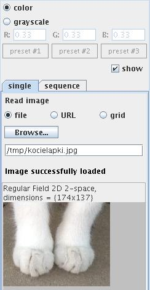
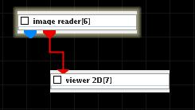
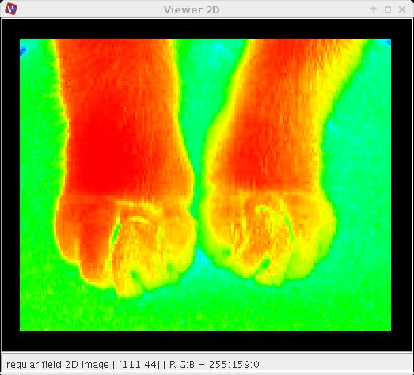

IMAGE READER
The module reads image files in bmp, gif, jpeg, icns, ico, pcx, pnm, png, psd, rgbe, tiff, wbmp, xbm, xpm format.
Output data
The output field is regular 2D or 3D with affine geometry with at least one scalar component. There is a geometry object of the field.
Computation parameters

In the single tab a radio button panel defines the source of the input data either from file, URL or grid.
To select an input file click the browse button and select a file in the file browser or type the file name into the text input field below the button.
In the sequence tab the user can read in a sequence of images with the same dimensions. To select a series of input files click the browse button and select the files in the file browser.
If show check box is on the image is shown in the viewer. To prevent the viewer from showing the image switch the box off before data is read.
The user can choose between color and grayscale. In case od grayscale there are preset conversions of RGB color image available, the user can also define his own conversion.
After reading in data from the input file there appears some basic information about the data:
Presentation parameters
Presentation tab contents are described in the common interfaces section unter the Presentation Panel entry.
Example

Select the image reader module form the regular data readers library and move it into the work space. Connect the output port of the geometry object with a viewer 2D module. Select an image file.
